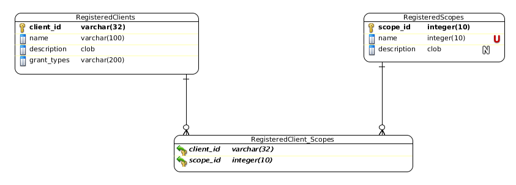

In order to be able to develop secure applications on Fantastico, you must first register them in order to be able to obtain access tokens. Before moving forward to see supported ways to register applications into a project it is important to understand the data structure presented below:
Summarizing the diagram above, a client is described by:
client_id
A global unique identifier for the application within a Fantastico project.
name
A friendly name which accurately describes what is the purpose of this application.
description
(Optional) A human readable text detailing the benefits of this application.
grant_types
A comma separated list of values describing what OAuth 2 grant types this client can use in order to obtain an access token.
scopes
This is a list of scopes this application is authorized to use.
token_iv
A 128 bits initialization vector specific to this client used to initialize AES algorithm.
token_key
A (128 / 192 / 256) bits key used for AES algorithm.
return_urls
A list of return urls which Fantastico OAauth 2 authorize is allowed to redirect user agent of end user.
This is a Fantastico extension used to allow new apps registration into an existing project. In order to enable this extension in your project follow the steps below:
Activate the extension.
fsdk activate-extenstion --name oauth2-registration --comp-root <your components root folder>Synchronize database.
fsdk syncdb --db-command /usr/bin/mysql --comp-root <your components root folder>Start your development server.
Access http://localhost:12000/oauth/oauth2-registration/index
You can find more information about this extension on OAUTH2 application registration.
Even if it’s really easy to use the frontend for registering applications, when you will migrate your project to production you will definitely want to automatically register the applications using a script. The easiest way is to dump RegisteredClients table content into a create_data.sql script placed under your main component.
By doing this, next time you sync your database in production using SDK it will preregister all necessary applications. Please make sure you do not include oauth2-registration client id. This is automatically added by the extension.